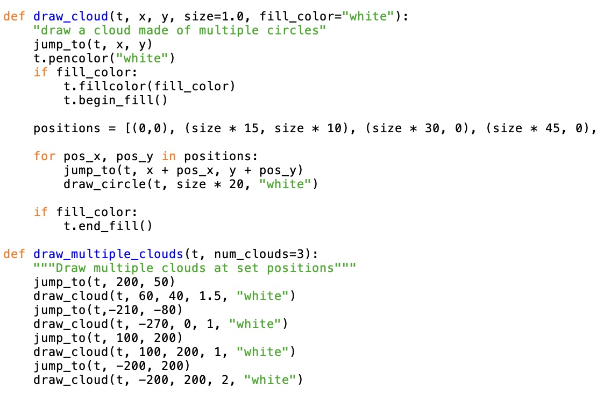
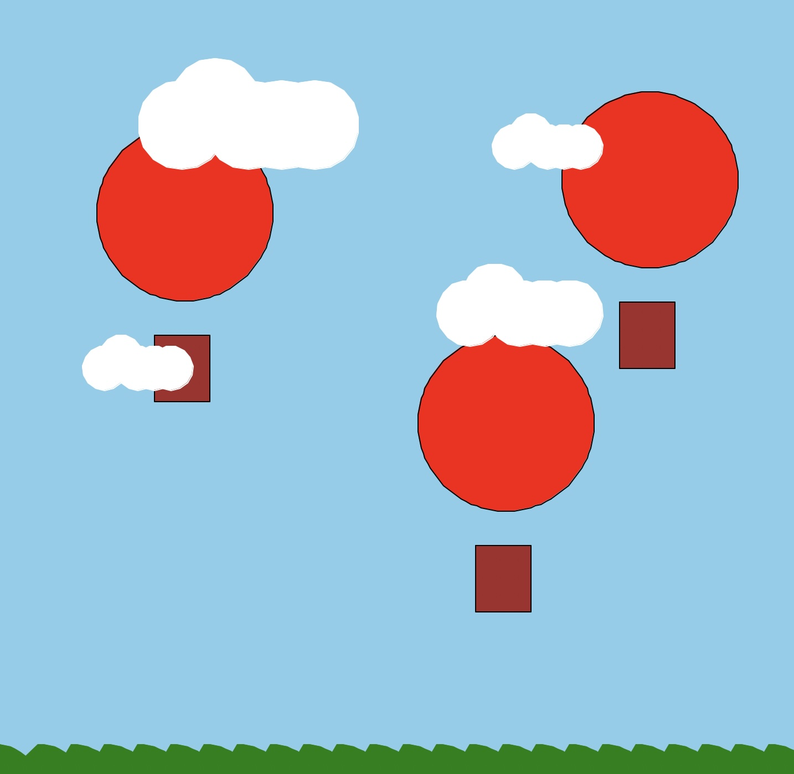

Using refractorized code, the scene includes calls to draw multiple hot air balloons, multiple clouds, and hills without the busyness. To draw the hot air balloons, the balloon itself is a polygon with a rectangle associated with it, all being different sizes but in set positions. These use coordinates such as (-200,240) to place each polygon-rectangle pair. The clouds are made of multiple white circles that vary in size. To draw multiple clouds, draw_cloud functions are used describe location, color, and size. The rolling hills are drawn with a curve function, for x, y, length, curve_factor, segments, and color. The refractorized code called the draw_hills function once, using t and fill_color green. These small curves required dozens of functions, showing the necessity of refractorization.
The draw_cloud leads into the draw_multiple_clouds using (t, x, y, size=1.0, fill_color "white") in each cloud. Each cloud is made of multiple circles, then using jump_to(t, x, y), clouds are placed throughout the image. Therefore, in the refractorized code, draw_multiple_clouds is used with t and num_clouds=3.
Final scene created with Turtle graphics, showcasing the use of refractorized code to draw multiple elements efficiently. It shows the hot air balloons, clouds, and rolling hills in a cohesive design, using shapes such as circles, curves, and rectangles to represent these objects. The scene is colorful and demonstrates the power of using functions to create complex graphics with simplicity and clarity.
